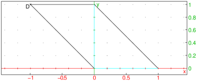

24.14.4 Rotation in the plane
See Section
25.12.4
for rotations in space.
The
rotation
command creates a rotation.
rotation
takes two mandatory arguments and one optional argument:
P
, a point (the center of rotation).
θ, the angle of rotation.
Optionally,
G
, a geometric object.
rotation(
P
,θ
)
returns a new command which rotations about
P
through an angle of θ.
reflection(
P
,θ,
G
)
returns and draws the rotation of
G
about
P
through an angle of θ.
Examples
r
:=
rotation
(
i
,-
pi
/3);
r
(
square
(0,1)
or:
rotation
(
i
,-
pi
/3,
square
(0,1))
rotation
(
i
,-
pi
/2,
line
(1+
i
,-1))
